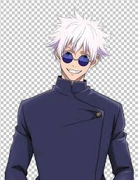

Навігація
ХарактеристикиСатору Годжо (五ご条じょう悟さとる Gojō Satoru?) — один из главных персонажей Jujutsu Kaisen. Гордость Семьи Годжо, первый за четыреста лет человек, унаследовавший и Безграничность, и Шесть Глаз. S Он работает преподавателем в Токийской школе магии и использует свое влияние для защиты и обучения сильных молодых союзнико Сатору Годжо — высокий, привлекательный мужчина с торчащими во все стороны белыми волосами. В большинстве случаев его светло-голубые глаза закрыты очками или повязкой. Имеет чуть мускулистое телосложение. Он почти постоянно носит черную повязку на глаза, тёмную школьную форму: пиджак с длинным воротом, длинные черные брюки и черные туфли. Из-за повязки волосы стоят торчком. В непринуждённой обстановке и в нерабочее время предпочитает носить темные круглые солнцезащитные очки и темную рубашку с длинными рукавами, а также отпускать вечно торчащие из-за повязки волосы. В нулевом томе Магической битвы глаза Сатору скрыты белыми бинтами. Сатору чрезвычайно уверен в своих способностях и репутации могущественного мага, считая себя непобедимым. Его мнение о других часто ограничивается оценкой их силы, и он довольно безразличен ко всем, кого считает слабыми. Кроме того, находясь под сильным влиянием собственной силы, он очень высокомерен. Он убежден, что он самый сильный в мире, и технически так оно и есть, заявив во время своего боя с Тодзи Фусигуро, что "На небе и на земле лишь я достойный". Это можно еще раз проиллюстрировать, когда ему было поручено защищать Рико Аманай, одного из немногих "слабых" людей, которым он искренне сочувствовал. Любое сочувствие к ее смерти вскоре было сведено на нет его огромной гордостью и высокомерием после того, как он усовершенствовал свою обратную проклятую технику в следующем бою против Тодзи Фусигуро. Во время напряженных сражений Сатору иногда впадает в неистовое боевое состояние, побуждаемый своей решимостью победить и неопровержимым доказательством того, что он один является сильнейшим. Его боевой стиль характеризуется агрессивными и властными атаками, в то же время он демонстрирует противникам свои отточенные приемы. Более того, в критической ситуации он способен быть хладнокровным. Он отдает предпочтение уничтожению своих врагов, а не спасению невинных людей, когда считает, что жертвы неизбежны. Однако это распространяется только на людей, убитых его противником; он не причинит никакого долговременного вреда или не убьет кого-либо невинного, чтобы одержать победу. Тем не менее, несмотря на свою надменность и силу, Сатору более человечен, чем кажется на первый взгляд. После победы над Тодзи, Сатору с печальным видом поднял труп Рико, показывая, что, хотя его недавняя тщеславная победа временно затуманила его чувства, он все еще испытывал некоторую скорбь из-за ее смерти. Он хотел убить членов религиозной группы Звезда, которые радовались смерти Рико, но был остановлен Сугуру Гето, на которого в то время он полагался как на моральный ориентир, прежде чем предпринять какие—либо действия. Более того, позже Сатору пришел в ужас и панику, узнав, что Сугуру, его единственный лучший друг, стал убивать немагов. Сатору попытался урезонить своего друга, но в конце концов понял и смирился с тем, что потерял единственного человека, которого действительно считал равным себе. После того, как Сатору пришлось покончить с Сугуру, прежде чем разразились новые бедствия, именно травма от потери лучшего друга стала причиной его окончательного падения в Сибуе. Он также был в отчаянии, когда Юдзи, по-видимому, умер. Конечная цель Сатору - реформировать мир магов снизу вверх с помощью образования. Он стремится воспитать новое поколение магов, которые, как он надеется, однажды станут равными ему.
| Ім'я Головного персонаж | Satoru Gojo |
| Раса | Магическая |
| Возрасть | 29 лет |
